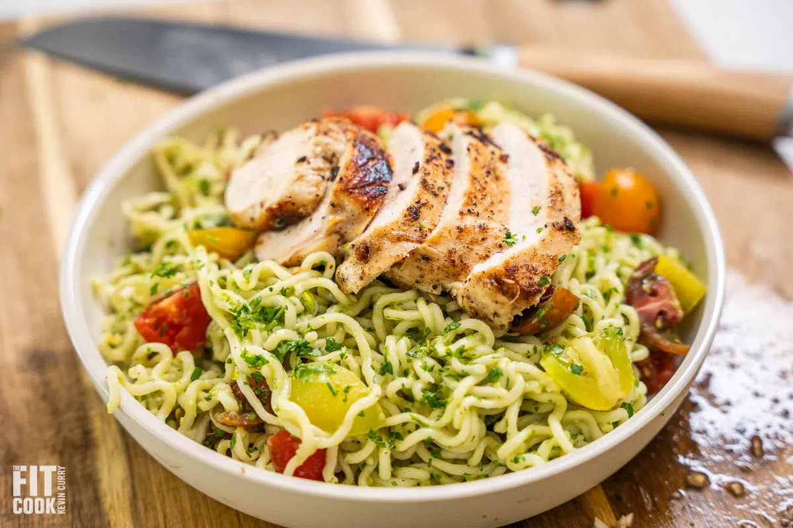

Avocado Ramen Nooldes

Perfect recipe for a summer day
Descritpion
Complete dish for 2 servings of 398g and 540 calories each. Can be done in 20min.
Ingredients
- 10oz chicken breast
- 2 teaspoons onion powder
- 2 teaspoons garlic powder
- pinch of sea salt & pepper
- 4oz ramen noodles
- 1 1/2 cups cherry tomato, quartered
Sauce
- 1/4 cup ripe avocado
- 1 teaspoon garlic
- 1/3 finely diced parsley
- juice from 1/2 lemon
- 1/3 cup water
- sea salt & pepper to taste
Steps
- Bring a pot of water to a boil and add noodles. Once cooked to your satisfaction, drain and set aside. Should take no more than 4 minutes.
- Lightly spray chicken with avocado or olive, then rub the seasoning all over the chicken breasts.
- Set a carbon steel or nonstick pan on medium-high heat and once hot, spray with oil then add the chicken breasts. Cook the chicken for 6 – 8 minutes on each side, or until the juices run clear. Remove from the heat and set aside.
- In a bowl, mix together the ingredients for the sauce. Make sure the consistency is not too thick or else the noodles will clump.
- Then fold in the tomatoes.
- Enjoy the avocado ramen with the chicken breast.